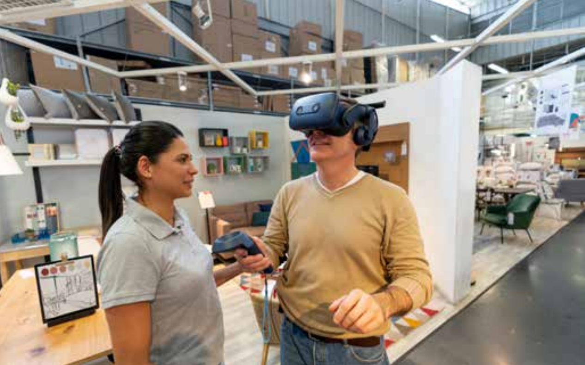

An interview-led feature that brings “metaverse” discussions back to fundamentals: how digital worlds are built—through 3D content production, infrastructure, and the early shape of governance.

This piece was reported when “metaverse” discourse was accelerating, while much of the public conversation stayed at the level of product imagination and market narrative. I approached it from a more basic question: if a digital world is to become functionally comparable to the real world, what must exist beneath the hype— in production pipelines, infrastructure, and governance? Through an interview with Professor Chen Baoquan, the article pulls the metaverse back to the logic of building: 3D content as an industrial process, the constraints of making virtual environments scalable, and why “metaverse” is better understood as a social system in formation.
Excerpt 1 · Defining the metaverse as functional equivalence
If I had to put it plainly, the metaverse should be a future fusion of the physical world and the virtual one. People have heard of “augmented reality” (AR), but AR still lands in reality: it overlays text, images, and scenes onto the physical space, extending what is already there. The metaverse is different. It contains the physical world, but it also integrates a digital space whose functions are closely equivalent to reality. What does “functionally equivalent” mean? Think about what “real space” actually includes. It is not merely a container—it comes with communities, property, laws, finance, and the entire infrastructure of social life. In that sense, I believe the metaverse is a stage in which digital space becomes “materialized” to be almost equivalent to reality, and perhaps even to exceed it.
Excerpt 2 · Why it is an inevitable trend—and why it won’t arrive overnight.
It’s not a matter of optimism. I see it as an inevitable trend. But the metaverse is not a single, linear evolution like the mobile internet; it is a composite of many technologies. This is not unusual if you look at how modern society itself was built. China moved from an agrarian era into the present over thousands of years—it wasn’t achieved overnight. What matters is the direction of development. Communities, financial systems, and property governance existed early on, but they kept changing as society evolved. The metaverse will have its own “primitive period” too: communication may be less efficient, security less reliable, governance less mature—problems will be everywhere.
Excerpt 3 · 3D content production as a pipeline problem.
Today you see virtual idols and virtual streamers everywhere, but behind each one there is usually an entire team—otherwise you can’t make it work. It’s like watchmaking: at first everything is handmade—beautiful, precise, and expensive. Only after industrialized mass production did watches become something ordinary people could afford. In the same way, 3D digital content creation is a kind of manufacturing. It needs a process-driven pipeline, moving from workshop-style craft toward large-scale production.
Excerpt 4 · When communities scale, governance becomes unavoidable.
Even if it remains a highly abstract concept, both governments and the public should take it seriously. Why? Because it is ultimately about the rules of the game. Once a metaverse community is built and people are drawn in—one million, ten million, even a hundred million—the community acquires authority and begins to set rules. Then the real question appears: who writes those rules, and how? From that perspective, we have to enter early. Overseas, companies compete, but their capacity to cooperate is also striking. Even though Facebook popularized the term, Google, Microsoft, and others quickly followed—and they may even form civil or industry organizations to discuss it. Over time, technical norms begin to emerge: how to describe the world, how to make systems interoperable. With long-term coordination, those norms gradually harden into what people call “standards.”